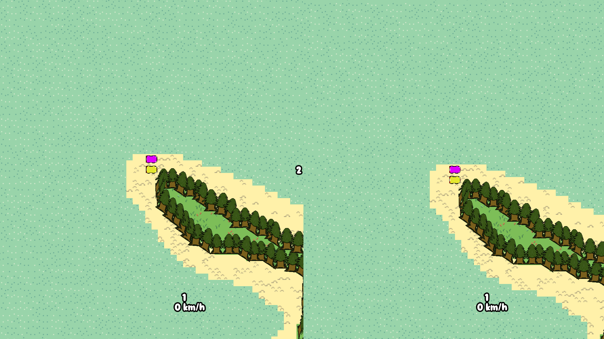
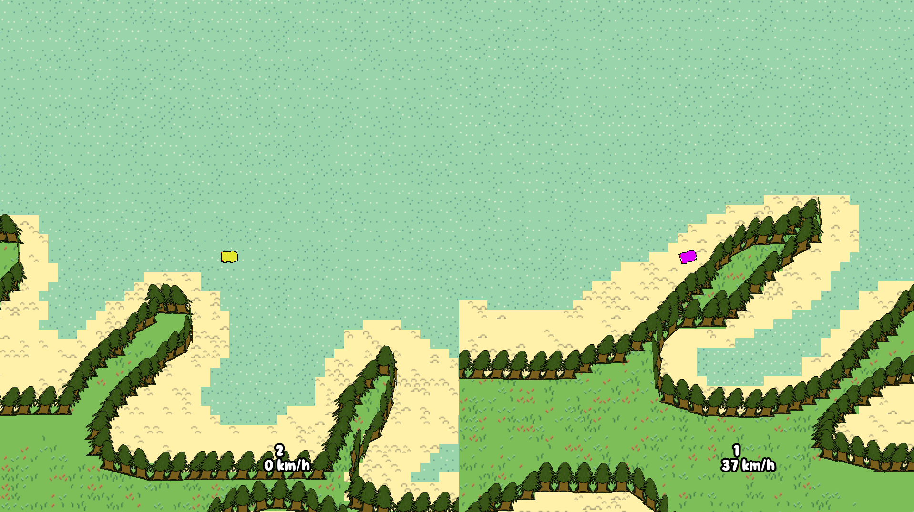

I was inspired by the game "Micromachines" for the NES, but I made a time trial focused game where Micromachines is a versus one. Graphically the game is quite simple and doesn't have a lot of detail, but where the game in my opinion shines is the game feel. I myself find the arcadey physics fun and not too complicated for a game of this size.
One of the main issues still in the game are the tracks since they are so simple and they don't offer a lot of replayablity other than chasing high scores. Also the second level is messed up due to layering issues.

This ended up being the project I am proudest of from this course since it is a fully playable game with systems that I had never done before like local multiplayer. I enjoyed making this game quite a lot and had fun seeing people post their highscores in our class group chat. The game also saves the highscores even in the web build I am pretty sure, which to me seems cool. The goal was just to make a working game and I'd say I did that here.

Blender Basics
I had never used Blender before this so I decided I should learn it.
Firstly I made the classic donut and mug model that most people do first. I followed a playlist of tutorials by Blender Guru. I only followed the series until the fifth part.
1. Donut and Coffee Mug2. Funny little goblin3. Tombstone4. Citroën inspired Logo5. Controller6. Glasses based on my real glasses7. Lenovo Mouse like the ones in school8. Emerald Ore inspired by Minecraft9. Otamatone10. Pencil11. Energy Drink that does not resemble any real product12. Rock13. XP Pickup
I am pretty happy with the results and I learned a lot about Blender and it's hotkeys and such. The main goal for the project was just to learn new things and to have fun while learning. Thats why I made so many random models that just popped up into my head and I also modeled things I saw in my room. I didn't get to use UV unwrapping that much in this project but I do understand the basics of it now too! Overall this was a nice experience and I will be using Blender in the future. Texturing wise I did use both ways of texturing, both texture painting and putting on a texture on the UV itself. I also did try to make use of shaders.
Unity Third Person Roguelite Prototype
I have always wanted to make a roguelite / roguelike and now I have some systems I can just copy paste in the future. I made systems such as: Player movement, player health management, player stat management, player level management, 2 different attack types both melee and ranged, an enemy that uses the Unity navmesh component which I had never used before, I made the enemy spawner work so it only spawns a certain amount of enemies and only on the nav mesh so they wont spawn out of the map, I made the enemies drop XP and the player uses the said XP to gain a random stat boost on level up.
These are pretty normal fundamental systems for a roguelite / roguelike game and I will definetly be using these in a larger project either in my free time or for a school project. The "game" is visually quite lackluster but that is mainly because I wanted to focus on just the mechanics of the game. In the game the player can roll, throw shells, melee and block. For some reason the third person camera was a bit iffy to setup but in the end it works decent enough.
The prototype does not have any end goal and if the player dies it just destroys the player gameobject.
Godot VR Prototyping
I made a few interactable objects and a vr player controller in Godot using the Godot XR plugin. The hardware I used were the Meta Quest 2 headset and the link cable.
This was by far my worst project since I did not get almost anything to work and learnt basically nothing about making VR objects since they didn't work as expected.
There was a really limited amount of help on the internet for doing VR development with Godot. I should've probably picked Unity instead.
Unreal Engine RPG based of the Moore's RPG template
I made a small bite sized game prototype using Moore's RPG template on Unreal Engine 5.8, where you are tasked to gain back Toni's milk and Toni's fancy stone. Below is a walkthrough of the first quest of the game:
Firstly you wake up in a forest, with nothing on except your fists. But you can steal someone's sword off the ground if you just walk down the path you see.
You meet this strange Toni fellow who seems upset.
You proceed to ask him if he is fine.
He seems a bit lost.
You find out someone stole his milk!!
You go beat up the guy who stole his milk!
That's what you get for stealing Toni's milk!
You take back Toni's milk
You have made Toni's day!! As a reward you get 100 coins and 100 xp!
That's how the first quest of the game goes. The quest was made using datatables that were already included in the template. Below are the datatables needed to make a new quest:
Quest datatable
Quest npcs dialogue responses
Quest player response dialogue
By just adding my own dialogues into the datatable I could easily make more quests that follow the same structure.
Other than adding quests to the game I also fixed the sky being really buggy in the template possibly due to it being meant for an older version of Unreal Engine.
I enjoyed using the premade assets but they did also require me to read alot of the documentation just to utilize them since they were quite complex. They needed to be adjusted quite a lot and there were moments where I had 5 different event graphs open just so I could make my own custom NPC. The Toni NPC you see is actually not just a copy pasted one from the template but instead it a child of a "master" class the template has that you can then either code your own systems into or use the systems provided. I went with the provided systems since they linked better to the datatables.
Post-Mortem
All in all I think I did semi decently even though I know for a fact I could have made a lot more and learned a lot more if I wasnt' so demotivated to do so. The first project I made was the best and the most polished but that was what I expected since I have the most experience with Godot as an engine. Also the game was the most thought about since I had wanted to make a top-down racing game for a while. The main issue with the first project was just me being sick during the second week and also I had moments of frustration with the physics since they were so hard to pinpoint. But in the end I am proud of that project and would like to make more of those types of games in the future. The Blender went really well and I feel like there were no moments of frustration with it. The Unity Roguelite went also pretty well and had a lot of different systems that I will utilize in the future. Now for the two projects that did not go well, the Unreal RPG and the Godot VR. The Unreal RPG was atleast playable and had elements of fun in it and I learned a lot while making it. But the Godot VR prototype I cant believe was so difficult to get a few interactable objects working. In the future I will be spending a lot more time just reading and learning how to do anything before jumping head first into the development since the end result was so poor this time.
Overall I am happy I attended the course since I did learn a lot from it that I probably wouldnt have learned otherwise.